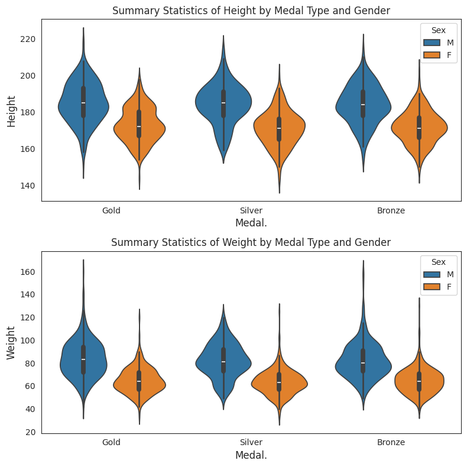
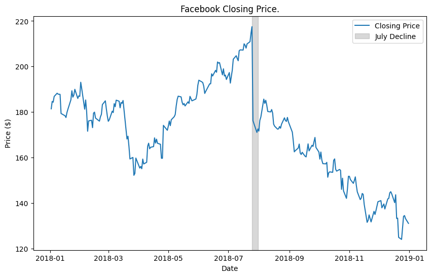
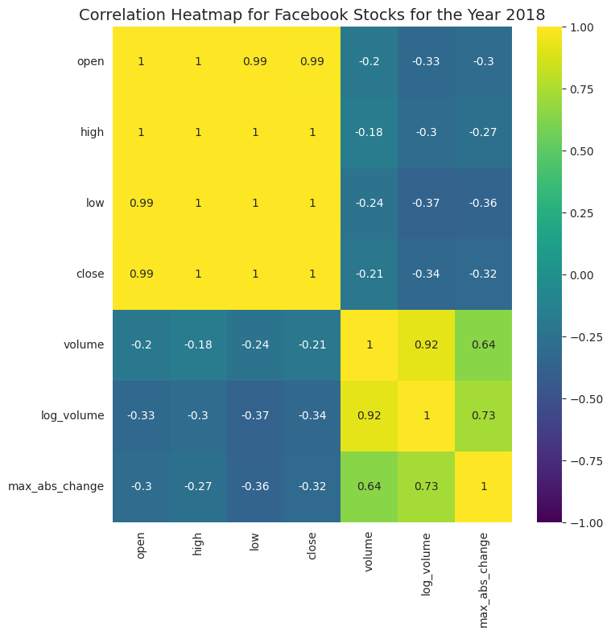
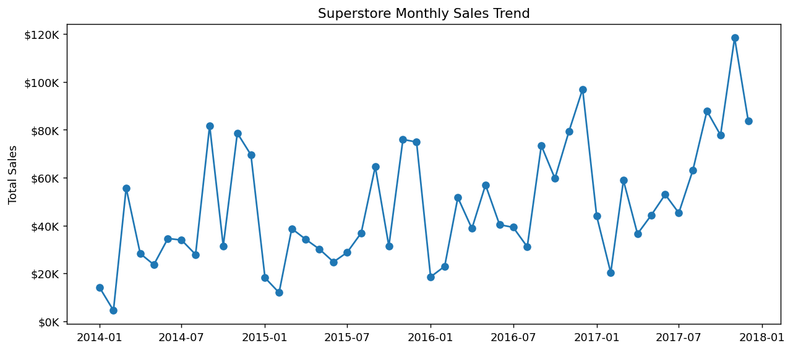

Olympic Athlete & Medal Visualization
Distribution analysis, categorical comparisons, athlete demographics, and interactive medal-record views.
I'm Melody Yang. I use Python to explore data, select visual forms that fit the question, and communicate patterns across sports, finance, energy, and healthcare datasets.

Distribution analysis, categorical comparisons, athlete demographics, and interactive medal-record views.

Time series, event annotation, Tukey fences, feature engineering, correlations, density, and regression.

The portfolio emphasizes analytical progression: prepare data, build interpretable features, compare distributions, and visualize relationships.
Animated country-level choropleths for renewable electricity production and total renewable energy consumption.
Zero-coded missing values, imputation, feature engineering, and descriptive outcome analysis.

Retail EDA covering category performance, monthly trends, customer segments, sub-category profitability, and discount strategy.